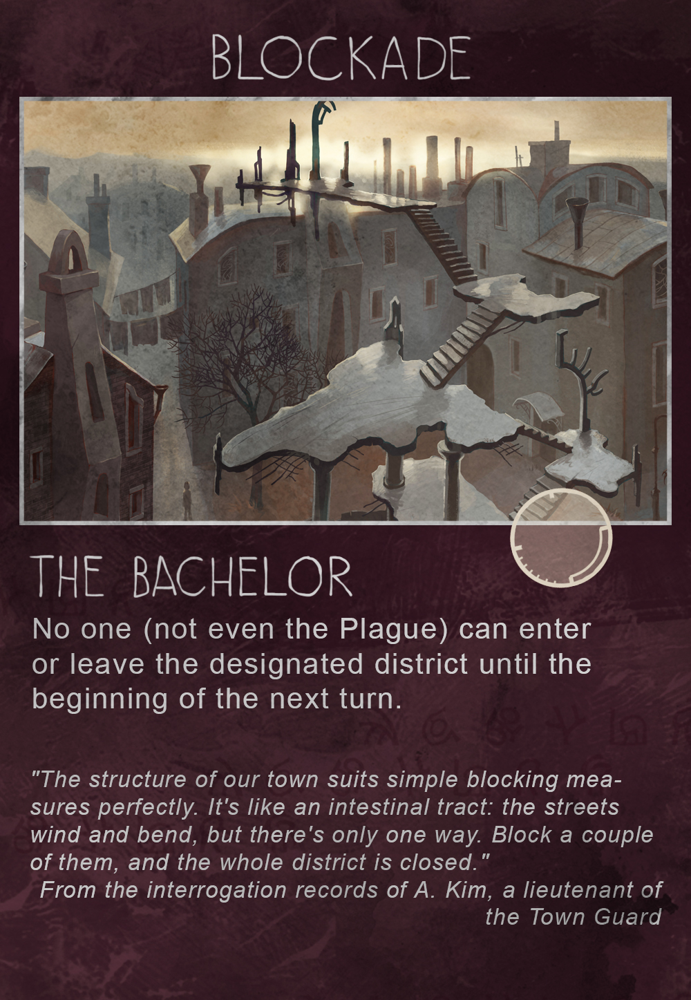
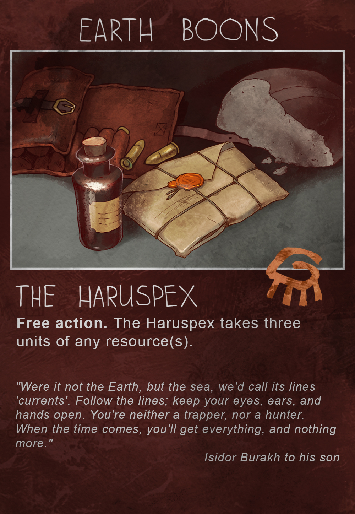
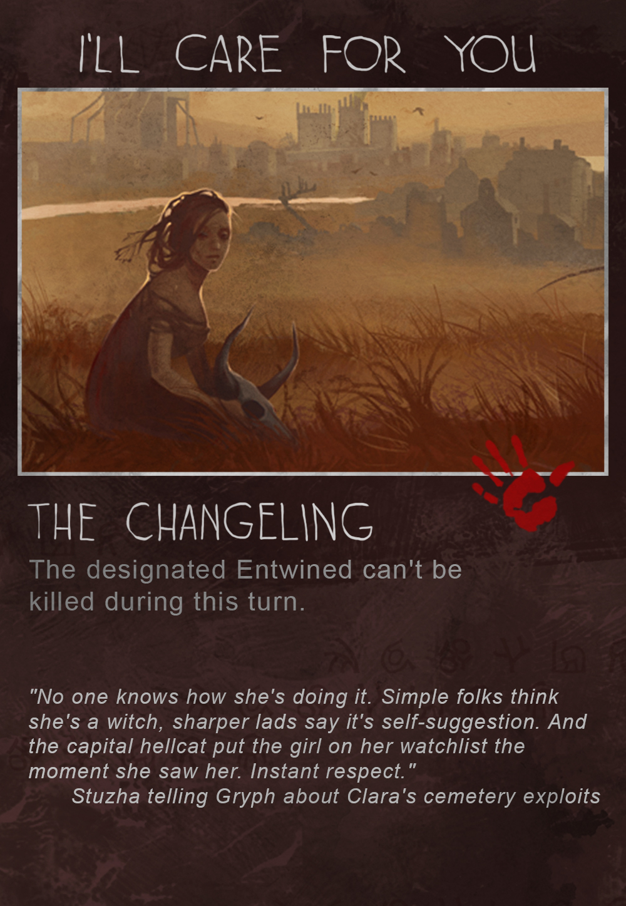

Русский
Русский
a tabletop game
by Ice-Pick Lodge
based on a videogame by the same name
 Русский
Русский
a boardgame by Ice Pick Lodge based upon a a plot-driven survival open-world adventure videogame for PC/Mac/Linux, PS4, and XBox One
Barricades are being built in the streets, shop shelves are becoming barren, marauders are looting houses. An invisible murderer is walking through the Town — merciless, weightless, and listless. No one knows how to protect themselves against it or who is to become its next victim.
Seems like the Town is doomed — yet, those of its inhabitants who are privy to the mystery of its internal structure are still trying to fight back. Their efforts and hopes are guided by the knowledge and the will of three outstanding persons.
The BachelorThe first is Daniil Dankovsky, a Bachelor of medicine and a young doctor from the Capital. He has precision instruments, a scientific worldview, and is respected by the ruling families of the Town. |
The HaruspexThe second is Artemiy Burakh, a Haruspex who knows how to read animals’ entrails and has shamanic heritage. He was born here, went away to study medicine, and has recently come back. The skills of his steppe forefathers will help him fight the Plague. |
The ChangelingThe third is Clara, The Changeling; a girl who has no past and can heal or murder with her touch. A fraud to some people, a saint to others. Where science and authority fail, mysticism enters the picture. |
The Pathologic tabletop game is currently under development. We are still searching for the final form it will take. So please be aware that some interface choices are subject to change and that assets presented above (tokens, cards, etc) may be altered.
Ice-Pick Lodge is a Russian game development studio founded in 2002. Our general philosophy is that games should give players food for thought, not just fun. We’ve never produced a board game before, but now we’ve found skilled designers ready to translate a digital story into chips and paper. That’s how tabletop Pathologic came to be.
© 2014 Ice-Pick Lodge · All rights reserved. Design by Tamara Persikova
{kind=link}
{kind=link}
{kind=link}